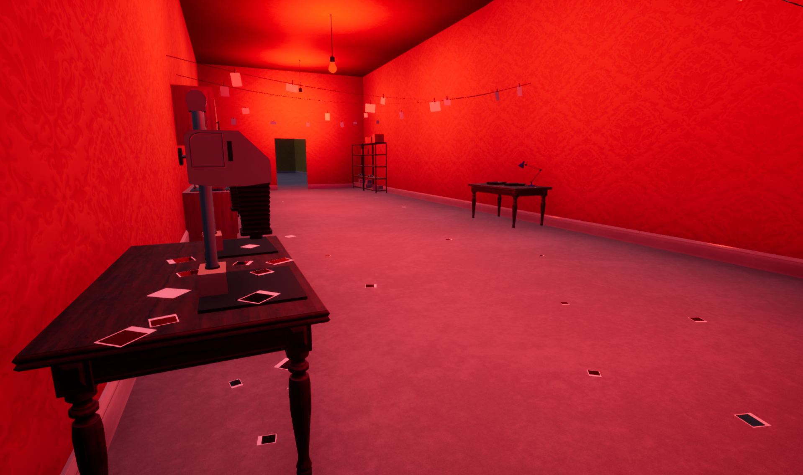
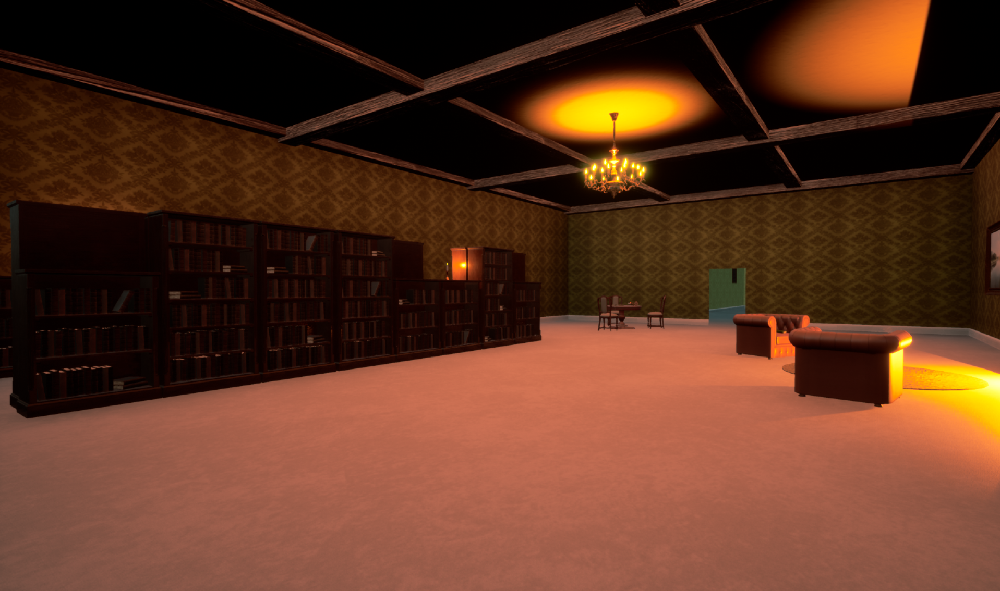
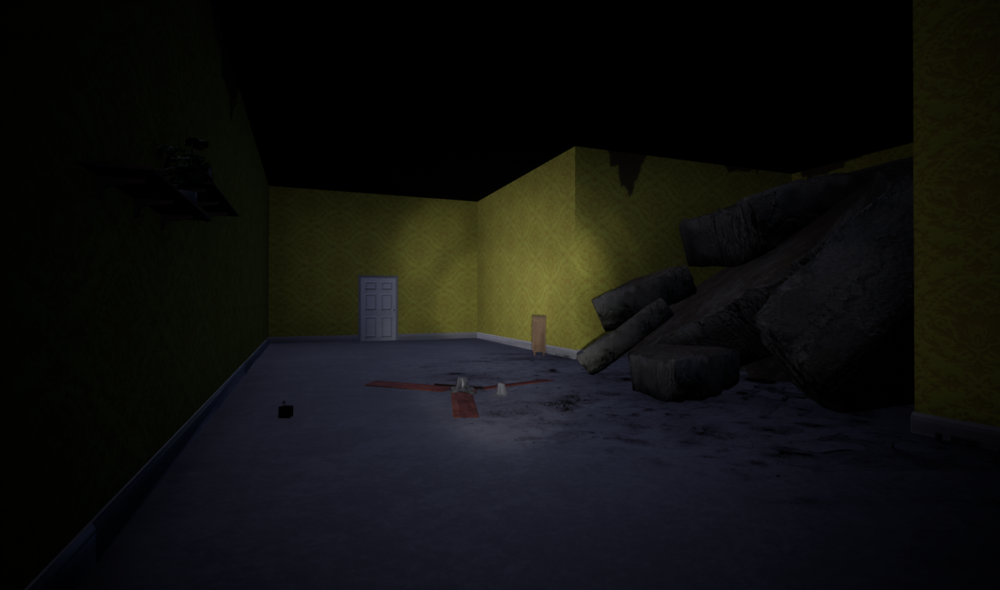
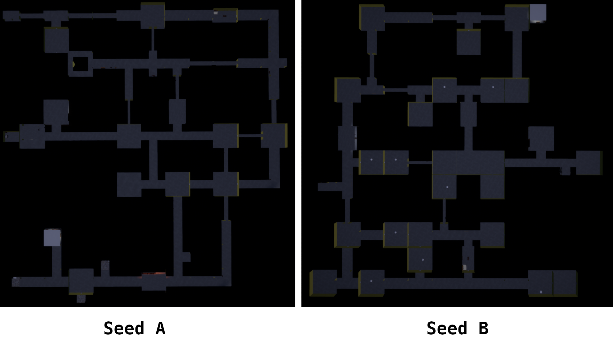

Echoes in the Dark
A liminal, exploration-horror game where the reality you don't see can shift
Game Overview
Echoes in the Dark is a liminal exploration-horror game where you have to explore a version of your house that seems... off. As reality shifts around you, solve puzzles and avoid any potential threats to get out alive.
- Uncover how the reality around you behaves and shifts when your attention decreases
- Explore various areas with growing threats
- Find the exit to get back to reality alive




MazeSystem
The Maze System generates a new version of the house for each playthrough without losing the structure needed for progression.
It uses a seed to build a random maze layout and populates it with preset rooms. The room selection process starts with all the rooms required for progression that are placed randomly in fitting spots. When all those rooms are placed, the system places filler rooms based on probabiliies to complete the maze

Two possible layouts generated from different seeds.
My role and reflection
What I did
I shaped the game's concept, exploration loop, puzzles, and shifting-reality mechanic.
- I developed a seed-based maze generation system that uses preset rooms to create a random experience for the player on each playthrough and reinforce the feeling of wrongness of the place
- I implemented a shifting-reality mechanic that can change objects or textures when the player is not looking to disorient them and make them question their surroundings
Challenges and lessons
On the conception side, the hardest part was to find a way to create uncertainty without making the player feel lost. This led to the idea of only changing some objects when reality shift rather than the whole room.
On the technical side, creating a fully random maze-generation system that would remain coherent as a whole and contain all the required rooms for progression was the biggest challenge.
This project taught me how to use details and subtle changes to create an uneasy atmosphere while keeping the player oriented and grounded in the game.
The game is currently in active development.